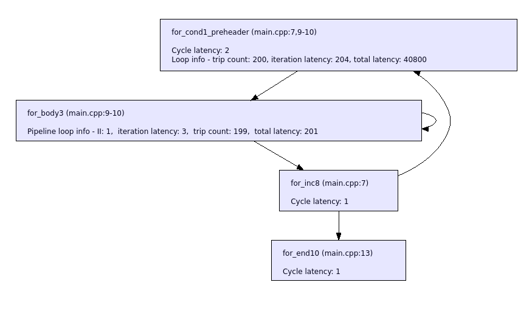

Release Notes¶
Latest Release (2023.2)¶
Release Date: August, 2023
Software Features and Enhancements¶
New SmartHLS Vision library:
Provides pre-optimized HLS C++ library functions for fast algorithm prototyping of video applications.
Configuring the HLS-generated Video IP interface is easy with the Vision library, requiring no changes to the C++ algorithm code. Switching the RTL interface between AXI initiator (M), AXI target (S), AXI stream, and a generic RAM interface with just changing a few lines of code.
Includes RTL modules for interfacing with I/O, specifically the camera and display modules. These modules use an AXI-stream-based video interface protocol, allowing easy system integration with HLS IPs.
Contains a complete demo design for the PolarFire Video Kit. This reference design uses the HLS C++ library and RTL components to take camera data, complete image processing on the data and displaying the resulting video.
Improvements to SmartHLS SoC reference designs:
Updated the PolarFireSoC Icicle Kit reference design based on 2023.02 release and tested with its corresponding Linux Image.
Updated project type: MiV_SoC to use MIV_RV32 v3.1 RISC-V embedded processor and targets the PolarFire Video Kit board (alpha feature).
Support for automatic attachment of HLS-generated modules to the MiV_RV32 processor and generate bitstreams.
AXI initiator interface burst transfer support is now in production.
Fixed performance issues caused by crossing 4K address boundary.
Added add_4k_boundary_protection
add_4k_boundary_protectionpragma option (see AXI4 Initiator Interface for Pointer Argument) (true by default) to allow for user to disable 4k address boundary protection if needed (potentially saving resources).Added protection against address decoding errors during AXI read requests to the HLS module address space. Before the module would not respond to an invalid request, now the module always responds and returns an AXI RRESP = 0x2 code when an address decoding error happens.
This behavior can be overridden and force the
AXI_RRESPto always be 0 by asserting the new parameterAXI_RRESP_ALWAYS_ZERO. This could be useful for debugging purposes by allowing to perform memory monitoring from SoftConsole or memory dumps from gdb over the entire address space of the HLS module.Improved HLS pipeline reports:
Example of the new format in the summary report:
+------------------------------------------------------------------------------------------------------+ | Function: row_cumulative_sum takes 40804 cycles | +---------------------------+--------------------+------------+-------------------+----+---------------+ | Loop | Location In Source | Trip Count | Iteration Latency | II | Total Latency | +---------------------------+--------------------+------------+-------------------+----+---------------+ | for.loop:main.cpp:7:5 | line 7 of main.cpp | 200 | 204 | - | 40800 | | |__ for.loop:main.cpp:9:9 | line 9 of main.cpp | 199 | 3 | 1 | 201 | +---------------------------+--------------------+------------+-------------------+----+---------------+
Scheduling and pipelining sections replaced with a new section that provides performance information.
All information that can be extracted on trip count, iteration time, total time, and initiation interval (II) is provided for any pipelined or unpipelined loops, or functions.
The loops are grouped under their parent function in a tree structure to show the hierarchy.
All special characters replaced with _.
Scheduler viewer also shows the same information:
Improved HLS co-simulation reports:
Print latency and initiation interval statistics for multiple calls.
Support reporting simulation statistics for multiple top-level functions.
Loop pipelining improved:
Remove the constraints on increment/decrement step for loops with variable number of iterations.
Enable pipelining for
do...whileloops.Provide better support for complex control flow in the loop body including
breakandcontinuestatements.Control status registers can now be read and written by a processor using a AXI target interface while the HLS core is running.
SmartHLS training materials were updated to include the dataflow pragma (Training 1 and 2). A fourth training was added to describe the SmartHLS SoC flow targeting a PolarFire SoC FPGA device.
Added an improved analysis to mitigate dataflow deadlocks by reducing critical regions for data buffers.
Bit-width optimization has been improved to handle loop-carried values.
HLS threads improved:
Support for arbitrary precision return types and return by value for user-defined
struct/classtypes.Improved support for implicit casting of thread arguments.
Messages related to FIFOs improved by adding FIFO name and source location.
{kind=link}
Resolved Issues¶
Fixed issue with using threads with different return types.
Fixed known issue from last release: HW/SW Co-simulation now passes for AXI initiator type-cast pointers (e.g., an
int64_t *pointer argument is casted and accessed as anint32_t *pointer)Fixed issues with generated Verilog parameters in Libero: If the user updated their HLS code and changed AXI widths (address, ID, data), they wouldn’t change in the Libero design because Libero keeps the parameter values unchanged when updating SmartDesign instances.
Fixed multiple function definition compilation errors when including the soft-dma API.
Fixed incorrect inline attribute in generated driver API that was causing functions to be optimized away during software compilation.
Fixed incorrect function name generation in accelerator driver API when passing array or struct arguments that are being partitioned.
Fixed issue with silent failure when running software.
Fixed crash during function pipelining with unmergeable control flow.
Fixed issues with stall logic for shared functional units.
Fixed issue with co-simulation testbench for single-port RAM interfaces.
Known Issues¶
Dataflow feature has known issues with control flow in dataflow functions. Using an explicit dataflow pipeline (i.e. each task is a function that is called directly in the dataflow function) can avoid these issues.
Dataflow sub-functions are completely flattened by inlining all calls recursively. This can add some limitations, e.g. reading and writing the same FIFO in the same task will show an error as it is not supported.
Previous Releases¶
SmartHLS 2023.1¶
Release Date: April, 2023
Installer Update¶
SmartHLS PolarFire SoC Features will be in production and no longer require a separate early access program license. PolarFire SoC features are available using a standard SmartHLS license.
Software Features and Enhancements¶
Introduced a new Dataflow pragma to express dataflow parallelism with minimal code changes, which is commonly used to improve hardware throughput. In dataflow parallelism, a succession of computational tasks which process continuous streams of data can execute in parallel. This parallelism can also be expressed using SmartHLS threads, but in many cases using the dataflow pragma instead requires almost no code changes. See the Data Flow Parallelism section for more information.
In previous SmartHLS releases, the function pipeline pragma was used to implicitly implement dataflow execution in some cases. This pragma did 2 things:
Modified the hardware generated for a function to support pipelining (e.g., unroll all loops)
Ran a sequence of functions with dataflow parallelism.
To improve clarity in the 2023.2 release, the function pipeline pragma now only does 1), and the dataflow pragma does 2).
Improved burst transfer via AXI initiator interfaces. When a burst-able access pattern is detected, the user can specify the
max_outstanding_reads/max_outstanding_writesinterface pragma field (see AXI4 Initiator Interface for Pointer Argument) to improve performance. This performance gain is achieved by allowing multiple AXI initiator requests to be sent while the accelerator is running. Additionally, SmartHLS will insert a FIFO on the AXI initiator interface to further improve performance by reducing back-pressure on the interface. For more details, see Optimizing AXI4 Initiator Performance.Enhanced compiler analysis for memory dependencies in pipelined functions. SmartHLS can now generate hardware with higher throughput using analysis to reduce the function pipeline initiation interval (clock cycles between starting successive function invocations).
Resolved Issues¶
Fixed AXI4 initiator support when used together with threading feature.
Fixed AXI4 initiator burst support when used with float pointer top-level arguments.
Fixed a bug in
ap_intlibrary regarding the wide integer addition.Fixed SmartHLS scheduling to make sure read-write address collision does not occur.
Read-write address collision means that a read and write access occur in the same clock cycle at the same RAM address. Microchip FPGA devices do not support read-first mode under read-write conflict for LSRAMs across ports A and B.
Fixed bugs in SmartHLS optimization to minimize bit-widths of operations.
Known Issues¶
The new AXI initiator feature supports type-cast pointers (e.g., an int64_t * pointer argument is cast to and accessed as an int32_t * pointer). While the HLS-generated RTL is functionally correct and works on the device, HW/SW Co-simulation may report a failure within the testbench. This issue will be fixed in the next release.
SmartHLS 2022.3¶
Release Date: December, 2022
Installer Update¶
Starting from this release, Microchip will no longer publish a standalone version for SmartHLS. All future SmartHLS releases will be included in the releases of Libero SoC Design Suite. Please make sure that the SmartHLS software is selected when installing Libero SoC Design Suite.
Software Features and Enhancements¶
If you are interested in joining the early access program for our new SmartHLS PolarFire SoC Features, please email: SmartHLS@microchip.com
Support burst transfer via AXI initiator interface (beta) – SmartHLS analyzes the C++ input code for burst-able access patterns to AXI initiator interfaces. When these access patterns are detected, SmartHLS will generate hardware to perform AXI burst transfers. AXI burst transfers significantly improve the data transfer throughput of AXI initiator interfaces. See AXI4 Initiator Interface for more details.
Introduced two new C++ library classes, DoubleBuffer and SharedBuffer, for describing data buffers in multi-threaded dataflow designs. The new classes allow users to easily implement the well-known double buffer (also known as ping-pong buffer) design pattern in C++ using SmartHLS.
Enhanced compiler analysis for memory dependencies across loop iterations. SmartHLS can now generate hardware with higher throughput by using the analysis to reduce the loop pipeline initiation interval (clock cycles between starting successive loop iterations).
SmartHLS now automatically selects the pipeline latency for multipliers and RAMs needed to achieve the user-specified target clock period on the target device. See ENABLE_AUTOMATIC_MULTIPLY_MODE_SETTING and ENABLE_AUTOMATIC_MEMORY_LATENCY_SETTING for more details.
Resolved Issues¶
Robustness improvements in SmartHLS optimization to minimize bit-widths of operations.
Fixed SmartHLS scheduling to make sure read-write conflict does not occur when targeting SmartFusion2/IGLOO2 devices. The issue could lead to incorrect implementation on device that appears to be working in RTL simulation (or SW/HW CoSimulation).
Read-write conflict means one read access and one write access are happening at the same clock cycle to the same RAM address. SmartFusion2/IGLOO2 devices do not support read-first mode under read-write conflict for LSRAMs.
Known Issues¶
The new AXI initiator feature supports type-cast pointers (e.g., an
int64_t *pointer argument is cast to and accessed as anint32_t *pointer). However, SW/HW Co-Simulation of this use case may fail due to an issue in the CoSimulation testbench. Note that the HLS-generated RTL is still functionally correct and works on the device. We will fix the CoSimulation issue in the next release.There is a known synthesis issue in the Libero 2022.3 release, where timing may not be met if larger sized signed multipliers are in the design. If your SmartHLS design is not meeting timing with critical paths through multipliers, you can increase the latency of multiply operation to get around this synthesis issue, by adding the following constraint (in the GUI or in your config.tcl file):
set_operation_latency multiply 6.
SmartHLS 2022.2.1¶
Release Date: October, 2022
Software Features and Enhancements¶
SmartHLS PolarFire SoC feature now uses the standard PolarFire SoC Icicle Kit Reference Design (v2022.09) as the base project.
SmartHLS PolarFire SoC feature now uses the standard Linux image for the PolarFire SoC Icicle Kit Reference Design: PolarFire SoC Yocto Board Support Package (v2022.09).
Support cyclic and block memory partition, and partition along user-specified dimensions; allowing more tailored partition schemes for designs to improve memory access throughput. See Memory Partitioning.
Improved access-based partitioning to detect block/cyclic access patterns and automatically partition local memories for better memory access throughput.
Now allows a FIFO to be accessed by multiple reader functions, or by multiple writer functions.
Added a SW/HW Co-Simulation feature to stall the input and/or output FIFOs with a user-specified probability during simulation. See COSIM_<INPUT|OUTPUT>_FIFO_STALL_PROB.
Updated the device timing model for PolarFire and SmartFusion2/IGLOO2 device families. Saves area (LUTs/DFFs) while getting FMax closer to the target clock period.
Resolved Issues¶
Bit-width minimization optimization for a corner case in arithmetic shift-right and logical shift-right operations.
Optimizing multiply operation with a very large constant integer (> 64bits).
Determining the memory size for a pass-in-by-reference argument.
SW/HW CoSimulation where the simulation testbench may not interact with AXI4 interfaces in a protocol-compliant manner.
SmartHLS 2022.2¶
Release Date: August, 2022
Software Features and Enhancements¶
New SoC profiling feature: measures runtime spent on data transfer and computation by the HLS accelerator(s) in an SoC design. See SoC Profiler for more information.
Updated naming convention of the SmartHLS’ output RTL files to
<ProjectName>_<TopLevelFunctionName>.v|vhd(see SmartHLS Output Files for more details).When a user clicks on a step (e.g., compile software to hardware) that has already run and yet is still up to date, SmartHLS will now prompt the user to confirm if they intend to re-run the step before proceeding. This saves users’ time by avoiding re-running steps that were already done, especially for long-running steps like place-and-route.
set_custom_top_level_moduleTCL command is deprecated, use instead Set Top-Level Function pragma to specify the top-level function.The SmartHLS IDE’s default workspace location is changed to
C:\Users\<username>\hls_workspaceon Windows and/home/<username>/hls_workspaceon Linux.The SmartHLS’ default installation location on Windows is changed to under
C:\Microchip\.
Resolved Issues¶
Fixed an issue that could lead to incorrect RAM inference by the RTL synthesis tool, causing certain designs that work in functional simulation (e.g., SW/HW Co-Simulation) to not work when programmed onto the FPGA.
Fixed the VHDL Wrapper Files to properly include the
axi_targetandaxi_initiatorinterface ports.Fixed an issue in the IDE related to compiling C source file (with .c extension) with
-std=c++0xflag.Fixed an incorrect bit-width minimization optimization that could incorrectly reduce the bit-width of a variable that is passed as write data to the
fifo_writefunction while being used by other operations.Changed Linux installation’s read permissions to allow users to share a SmartHLS installation set up by an “admin” account.
Fixed the IDE cancel button not working properly on Windows.
Added support for generating a Logic Level Distribution histogram on Windows.
SmartHLS 2022.1.1¶
Release Date: June, 2022
What’s New¶
SoC features targeting PolarFire® SoC FPGAs: only available through the SmartHLS SoC Early Access Program (EAP) and requires a separate SmartHLS SoC EAP license. If you are interested in participating in the EAP, please email SmartHLS@microchip.com.
Generation of C++ accelerator drivers capable of controlling SmartHLS accelerators from software in an SoC design.
Generation of a reference SoC design implementing user’s code, targeting PolarFire SoC Icicle Kit.
Automatic programming of a generated SoC design (or a base SoC project) to an attached Icicle Kit, and capability to cross-compile user software (with or without hardware accelerators) to run on the Icicle kit.
Software Features and Enhancements¶
Support for AXI4Target and AXI4Initiator interface types. See the updated section Top-Level RTL Interface.
Support for generating multiple, separate accelerator IPs in the same SmartHLS project by allowing multiple top-level functions. A separate accelerator IP will be generated for each function marked with
#pragma HLS function top(see Set Top-Level Function).Support for linking external software libraries that can be used as part of the software testbench in SW/HW Co-Simulation or host software running on RISC-V processor in the case of SoC. For information on including external libraries in SmartHLS projects, see Makefile Variables.
Strength-reduction optimization for optimizing division/modulo operations with a constant divisor to multiplication and shift operations.
When user invokes an action (e.g., compile, simulate, etc.), SmartHLS now prompts user to address outdated or missing prerequisite steps and give users the option to skip re-running outdated prerequisite.
Support
thisas an argument to HLS pragmas used for class/struct methods.
Resolved Issues¶
The following defects and enhancement requests were resolved:
Fix incorrect optimization of global scalars that results in incorrect values for AXI read/write operations.
Known Issues¶
As part of the newly released SoC features, SmartHLS can program an Icicle Kit using the FlashPro Express software. A known issue is that SPI flash memory initialization using an external FlashPro6 programmer and FlashPro Express does not work. For designs that require memory initialization (e.g., arrays inside the accelerated function that require initial values), it is recommended to use the Icicle Kit’s embedded FlashPro6 programmer.
If you try connecting the embedded programmer and get a warning about the embedded programmer needing an update, follow the steps from this guide (section 1.1): https://coredocs.s3.amazonaws.com/Libero/12_5_1/programming_debug_v12_5_1_release_notes.pdf.
On Windows, if you run the script
<SMARTHLS_INSTALLATION_DIR>/SmartHLS/examples/scripts/utils/download_libraries.shon a Cygwin terminal as described in FFmpeg 4.4 and OpenCV 4.5.4 and uninstall SmartHLS some time after, some directories are known to remain in<SMARTHLS_INSTALLATION_DIR>/SmartHLS/precompiled_libraries(ffmpeg4.4-x86_64-cygwin/andopencv4.5.4-x86_64-cygwin/). These leftover directories will cause any reinstallation of SmartHLS to the same<SMARTHLS_INSTALLATION_DIR>/as before to become incorrect. Therefore, we require you to manually delete the entire<SMARTHLS_INSTALLATION_DIR>/SmartHLSafter an uninstallation.(Update) In July 2022, version 1.0.205 of the PFSOC_INIT_MONITOR IP core was deprecated from Libero 2022.1. Since SmartHLS’ reference SoC uses this deprecated version of the IP, SmartHLS’ SoC Features stop working with Libero 2022.1. Please Create a Tech Support Case if you are impacted by this issue. This issue will be fixed in the SmartHLS v2022.2 release.
SmartHLS 2022.1¶
Release Date: Apr 2022
Software Features and Enhancements¶
Generate Logic Level Distribution histogram from the synthesis timing report (Linux only)
Improved SW/HW CoSimulation support for C++ class’s private member variables in software testbench.
Improved memory partitioning:
Improved automatic Access-Based Memory Partitioning.
Added an efficient implementation for Struct-Fields Partitioning.
Improved Struct Packing:
Added comprehensive legality checks for
structpacking.Support automatic packing for sub-functions, i.e., no need to specify pack pragma for sub-functions.
Support
structpacking when the packed type is the same as the cast type (see Struct Packing).
Resolved Issues¶
The following defects and enhancement requests were resolved:
HLS-616: Fix incorrect path to import HLS-generated Verilog when running SmartHLS’
create_hdl_plus.tclscript.HLS-608: Fix RTL synthesis issue for training example: Training3/wide_mult_axi.
HLS-623: Removed struct member of an
axi_slaveinterface variable was incorrectly reported as write-only memory.HLS-592: Incorrect handling of %s with format specifier in printf
HLS-559: Fix automatic partitioning for
structtypes withFIFOmembers.
SmartHLS 2021.3.1¶
Release Date: Jan 31, 2022
What’s New¶
In December 2021, we made a webinar on “How Microchip FPGAs Can Improve Productivity in Motor Control Applications Using C++ With HLS”. The webinar is now available on-demand: https://event.on24.com/wcc/r/3504585/754DA52F256BFC4463D5751661C3037F
Software Features and Enhancements¶
All SmartHLS-generated output files are now put under the
hls_outputdirectory, except the auto-generated project configuration filesmakefileandconfig.tcl.The SmartHLS-generated Verilog output is now self-contained, by including all Verilog sub-IPs in the hls_output/rtl directory. * The Sub-IP module names are prefixed with the SmartHLS project name.
Improve struct packing for array of structs (Struct Support).
Provide a
__SYNTHESIS__macro to wrap around the code that should only be enabled for HLS synthesis (#ifdef __SYNTHESIS__), or to exclude non-synthesizable code (#ifndef __SYNTHESIS__). See more details in __SYNTHESIS__ Macro.
Resolved Issues¶
The following defects and enhancement requests were resolved:
HLS-568: Fix an incorrect optimization of uninitialized arrays.
HLS-558: SW/HW CoSimulation to support struct argument that contains a typedef of FIFO.
HLS-573: SW/HW CoSimulation fix about boolean return type from top-level function.
HLS-576: Support boolean pragma fields for C programs.
HLS-575: Support different return types of C function declaration and definition (C linker allows the declaration to use a different return type from the definition).
HLS-572: Fix a corner case bug of indirect access of arrays.
HLS-383: Fix int64_t or uint64_t mismatch behaviour in SW/HW CoSimulation.
HLS-263: Fix the IP conflict issue between HLS cores generated by different versions of SmartHLS.
HLS-235: Skip including unused Verilog IPs in create_hdl_plus.tcl to speed up ‘Build Hierarchy’ in Libero.
HLS-542: Improve error messages for struct packing feature.
HLS-534: Fix the Schedule Viewer’s control-flow diagram on Windows.
HLS-582: Fix the file import dialog in Eclipse IDE.
SmartHLS 2021.3¶
Release Date: Nov 26, 2021
What’s New¶
A SmartHLS Migration Guide on how to migrate designs from other HLS tool to SmartHLS.
Software Features and Enhancements¶
Enhanced Co-Simulation flow to support more sophisticated software testbenches, specifically those use high-level C++ features such as templates, classes, inheritance, namespaces, nested types and typedef.
Improved expression balancing optimization to reduce cycle latency of generated hardware (see LATENCY_REDUCTION settings).
Improved support of AXI4 target (slave) interface in a pipelined function.
Added support for floating-point ordered/unordered operations.
Added support of packed FIFOs (see hls::FIFO Argument) in Co-Simulation.
Added full lists of supported device options in the IDE’s device selection menu.
The Schedule Viewer now shows the latency and source code location in the control flow graph to ease latency analysis.
Improved error checking for invalid constraint settings.
Resolved Issues¶
The following defects and enhancement requests were resolved:
HLS-506: Fixed an issue related to pipelined functions using external memory.
HLS-532: JRE version update to include the latest security fixes and enhancements.
HLS-484: Fixed the re-initialization of aliased global variables after a reset is triggered.
HLS-48: Bug fix in bit-width minimization optimization.
SmartHLS 2021.2.1¶
Release Date: Sept 24, 2021
What’s New¶
SmartHLS now supports IGLOO2 device family.
Software Features and Enhancements¶
A new branchless Flatten Function feature to improve parallelism between operations.
A new Replicate ROM pragma to enable and control the replication of designated read-only arrays for achieving better circuit throughput.
Support for packing interfaces and memories with struct types into a wide scalar using the new pack pragma (see Struct Support).
Support struct as a return type for the top-level HLS function (see Struct Support).
Support for constant static struct members in SW/HW CoSimulation.
Disabled automatic unrolling of pipelined loops and their outer loops. Disabling automatic unrolling saves design size without noticeable loss in performance. A pipelined loop can still be explicitly unrolled with a Unroll Loop pragma.
Updated the user guide section on SmartHLS Command Line Interface.
Resolved Issues¶
The following defects and enhancement requests were resolved:
HLS-461: Fixed the initialization of global array of ap_fixpt type.
HLS-419: Some of the generated AXI4 slave controllers have IIs greater than 1.
HLS-420: Excessive use of block RAMs (specifically uSRAMs) due to a sub-optimal heuristic when packing pipeline registers into FIFO-like constructs.
HLS-443: Partition pragma is incorrectly overridden by default partitioning.
HLS-446: Incorrect mapping of completely partitioned array of struct.
HLS-475: Nested struct definitions may have an incorrect order in Co-Simulation.
HLS-456: Loops containing inner pipelined loops are automatically unrolled, leading to a significant increase in resources.
HLS-53: Removed the internal primitive operations from scheduleviewer.
SmartHLS 2021.2¶
Release Date: August 06, 2021
What’s New¶
SmartHLS is now installed by default with Libero 2021.2 for general release.
Free licenses are provided for SmartHLS, please refer to the instructions here to SmartHLS License.
Software Features and Enhancements¶
Improved optimizations to minimize signal bit-width to reduce resource usage.
Improved multiplier area for wide multipliers (>64-bits).
Added a
struct_fieldstype to the memory partition pragma (see Struct-Fields Partitioning), which is to specify the intention to partition a struct into its individual elements.Added a new “Synthesize Hardware to FPGA” feature that only runs RTL synthesis without place-and-route to obtain accurate FPGA resource usage faster.
Deprecated the
scalar_memorytype from the interface pragma. Please instead use acompletetype memory partition pragma on the top-level pointer argument to achieve the same effect (see Complete Partitioning).Deprecated the C arbitrary bitwidth library (
hls/types.h) and C bit-level operations library (hls/bit_level_operations.h). Please use the C++ Arbitrary Precision Data Types Library instead for better quality of result of the generated hardware.Windows installation no longer adds system environment variables and Windows IDE no longer uses system environment variables.
Known Issues¶
Excessive use of block RAMs (specifically uSRAMs) due to a sub-optimal heuristic when packing pipeline registers into FIFO-like constructs. The issue has been fixed in the 2021.2.1 release. For the 2021.2 release, here is the workaround to disable packing pipeline registers into FIFO to avoid the issue:
Open the
HLS Constraintsdialog, chooseSet custom config fileconstraint type and put in a file name (e.g.,custom_config.tcl) for the constraint value, click “Add” then “OK”Create a new custom config file in the project folder with the same filename as above (e.g.,
custom_config.tcl).Put the following line in the custom config file:
set_parameter USE_FIFO_FOR_PIPELINE_REG 0
Resolved Issues¶
The following defects and enhancement requests were resolved:
HLS-198: ap_uint<24> slices of width 8 is generating wider multipliers than necessary
HLS-220: MBW pass did not optimize for legup_select/concat primitives
HLS-233: Fix Tcl constraint name of floating point cores
HLS-234: Add Libero license check
HLS-259: Remove LEGUP_CYGWIN_BIN environment variable
HLS-261: Memory Partition partitions an unsupported case.
HLS-302: Integrate with Libero installer
HLS-353: Pass-in-by-value class argument not detected properly
HLS-354: cosim_cwrapper_insert.pl breaks in a corner case of comment position
HLS-355: AXI slave address map: change the printing order of fields in the same word
HLS-356: Add a GUI button and a make target to only run synthesis (no P&R) for resource results
HLS-364: UG: add documentation about “set_synthesis_top_module_file” after “set_synthesis_top_module”
HLS-366: Mem-partition fails to split a FIFO of struct
HLS-372: MBW: forward prop of OR operantion is wrong with extendFrom
HLS-373: MBW-related: signed comparison between sign/length-mismatched values was wrong in printed RTL
HLS-374: Differentiate AShr and LShr in generated Verilog
HLS-376: Multiply between two different sign operands is implemented incorrectly
HLS-377: Split-mult operand port widths mismatch.
HLS-379: Remind user to “Recompile Simulation Libraries” when Modelsim version changes
HLS-390: Update SmartHLS EULA to match Libero EULA
HLS-394: Returning AP Type by-value uses ap_num in CoSim
HLS-395: External global memory got incorrectly optimized by LLVM
HLS-396: hls::thread Pointer Arguments Coerced to Int for 64-Bit Target
SmartHLS EAP 2021.1.2¶
Release date: June 14, 2021
LegUp HLS is now rebranded to Smart HLS¶
To port your existing LegUp HLS projects to Smart HLS, the following changes will be needed in the source code:
The include path of HLS library: change
#include "legup/..."to#include "hls/..."All
legupnamespace is renamed tohls; e.g.,using namespace hls;orhls::FIFO
#pragma LEGUP ...should be changed to#pragma HLS ...
Software Features and Enhancements¶
Extended AXI4 master interface with AxSIZE and AxBURST support.
Improved FIFO depth modeling in software, and full-ness detection in software and RTL simulation.
Enhanced bit-width reduction to support very wide integer types (e.g., ap_uint<1024>).
Added support for unpartitioned structs (and nested structs) in CoSimulation.
Resolved Issues¶
The following defects and enhancement requests were resolved:
HLS-282: Rename “LegUp HLS” to “Smart HLS”
HLS-335: AP width memory controller gets “Warning: Invalid bitwidth ‘256’ for instr.”
HLS-330: VectorBlox design not finish when in multithreading with axi_read loops unmerged
HLS-328: Loop pipeline fails with ap_int type induction variable
HLS-327: Fix bug in software emulation of certain ap_int wide multiply operations
HLS-324: Legality check and error message about the one-to-one connection between FIFO and function’s FIFO argument
HLS-303: If Conversion Pass - DFS never exits with a >40,000 basic block size loop
HLS-296: If conversion pass errored out while trying to pipeline a loop
HLS-260: Segfault due to struct of ap_int top-level argument
HLS-158: Crashes at visitLocalMemoryInst – a struct argument containing ap_uint
HLS-147: Incorrect Transformation by if-conv
HLS-112: Add volatile support in extractArgs/cosim for parsing debug info for volatile
LegUp HLS EAP 2021.1¶
Release date: April 23, 2021
Software Features and Enhancements¶
Full support for complex software testbenches.
Automatically trigger re-compilation if needed to generate the software binary or Verilog when the C++ source code, Makefile, or TCL config files changed.
Added limited SW/HW Co-Simulation support for multi-threading when all threads are joined in the function where the threads are forked.
Added support for user-specified arguments of the main() function in software testbench.
Added AP_RND_ZERO quantization mode to the ap_fixpt C++ library.
Added a range() method to ap_int and ap_fixpt C++ libraries.
Added a simulation with waves feature to LegUp IDE for custom testbench.
Resolved Issues¶
The following defects and enhancement requests were resolved:
HLS-59: RTL Interface: fix memory port names
HLS-174: Spaces in LegUp workspace path makes synthesis fail. Add user error message to avoid spaces.
HLS-177: Change the header files on Windows
HLS-199: Add documentation comment to LegUp Library classes like ap_int similar to ap_fixpt so the user can mouse over the type in Eclipse and get the usage information
HLS-225: create_hdl_plus.tcl does not properly import mem_init files
HLS-232: Update windows installer link to LegUp getting started guide
HLS-255: After project import LegUp IDE does not save HLS constraints changes when closing
HLS-269: Missing legup_array_depth=1 for struct pass-in-by-reference
HLS-277: Automatically add array-depth attribute to pass-in-by-value structs.
HLS-278: Hardware functions are incorrectly removed by PreprocessThreadLib pass
HLS-279: Interface Report: Struct type IORam is incorrectly considered as scalar memory
HLS-280: Interface Report: byte-enable signal is not properly recognized for non-struct yet byte-enabled RAMs
LegUp HLS EAP 9.2.1¶
Release date: March 3, 2021
Software Features and Enhancements¶
Added support for new
legup::threadmulti-threading API (see Multi-threading with SmartHLS Threads)
Resolved Issues¶
The following defects and enhancement requests were resolved:
HLS-42: Libero 12.6 complains about set_option -rom_map_logic.
HLS-50: Sobel tutorial part 3 to match the syntax as part 1 & 2.
HLS-59: Fix the memory port names to a more understandable convention.
HLS-60: Give a proper error when there are multiple top-level functions specified.
HLS-63: Sefault if the top-level function pragma is removed from Sobel tutorial part 1.
HLS-78: Loop pipeline support for variable loop bounds.
HLS-97: Fmax improvements for customer design.
HLS-121: Cannot access AXI4 slave without starting the accelerator (in concurrent_access mode).
HLS-129: Loop unrolling crashes some designs.
HLS-142: Running Libero synthesis, P&R from LegUp will fail with Libero 12.5 or before on Windows.
HLS-149: LLVM’s loop-unswitch performs an unwanted loop replication.
HLS-156: CoSim: wrong values for ap_uint type being fed to the DUT.
HLS-162: Verilog name conflict in generated Verilog between a RAM instance and a register.
HLS-164: Cannot expand grouped AXI4stream ports in SmartDesign for HDL+ block.
HLS-165: Some memory interfaces are not showing in the interface report.
HLS-168: Clang errors out with none type memory partition pragma.
HLS-200: Can’t set multiply latency when split mult is enabled.
HLS-201: Execute create_hdl_plus.tcl from Libero got LEGUP_ROOT_DIR not set error.
HLS-203: ScheduleViewer does not work when LegUp installation and workspace are in different drives.
HLS-206: Red-line in Eclipse complaining about legup::thread/ref.
LegUp HLS EAP 9.1¶
Release date: Jan 4, 2021
Software Features and Enhancements¶
Only support targeting Microchip PolarFire® FPGAs
Support for Libero 12.6
Libero SmartDesign integration (see Instantiating SmartHLS IP Core in Libero SmartDesign)
Added support for pragmas (see SmartHLS Pragmas Manual) in the source code to specify LegUp user constraints instead of using Tcl commands.
Support for math.h functions (see Math Library (math.h))
Documentation of top-level RTL interfaces (see Top-Level RTL Interface)
Improvements to memory partitioning (see Memory Partitioning)
Added Microchip software end-user license agreement (EULA)
Resolved Issues¶
The following defects and enhancement requests were resolved:
Synthesize with Libero block flow to avoid limited number of top-level I/O pins
Fixes for RAM initialization and reset logic
Fix LegUp IDE cancel button on Windows
Fix Libero FMax parsing
Better error messages for unsupported C++ features (vector, map, etc.) and unsupported co-simulation cases